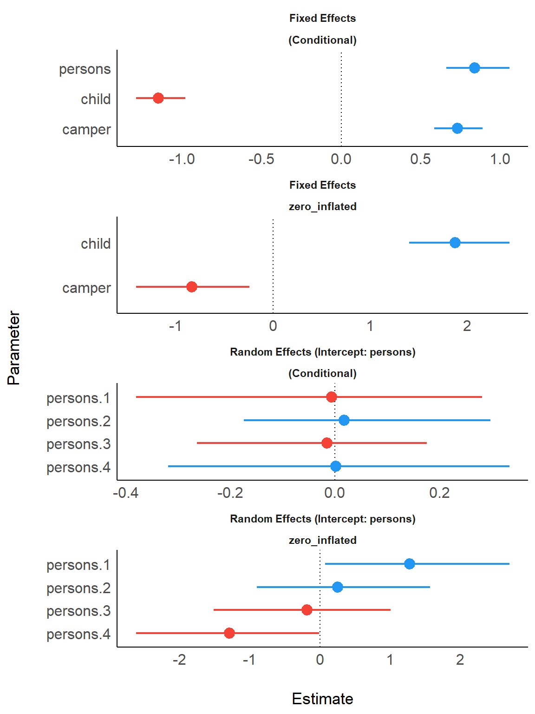
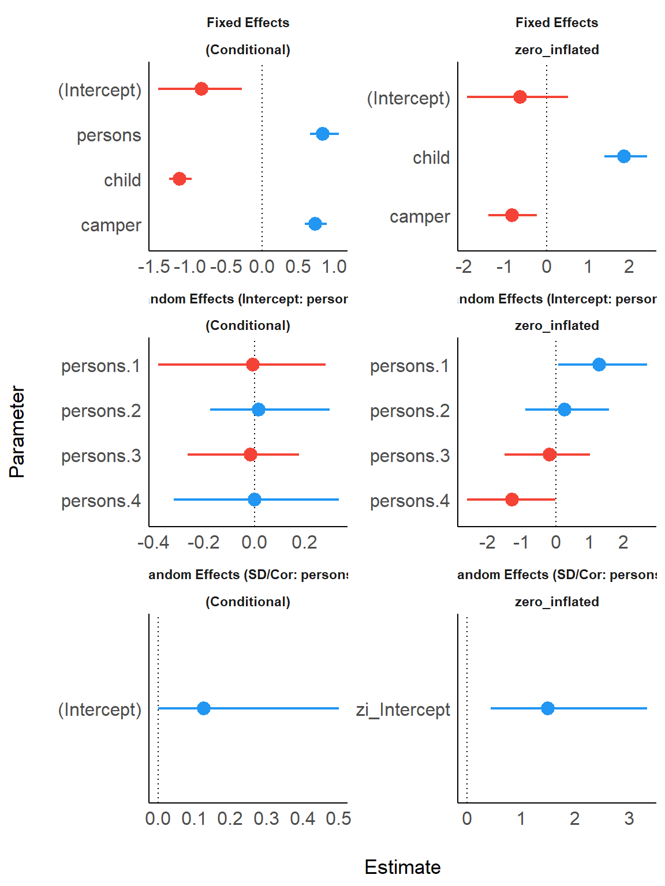
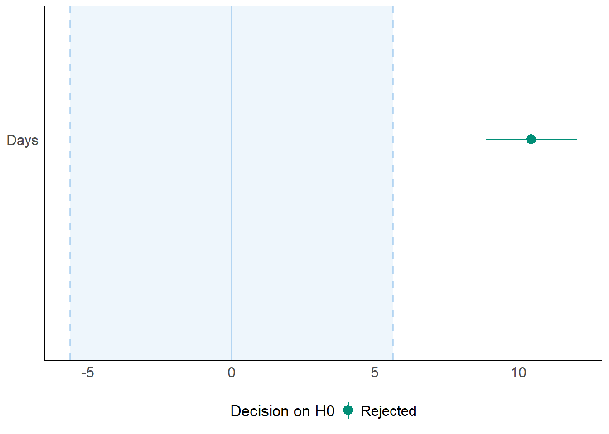
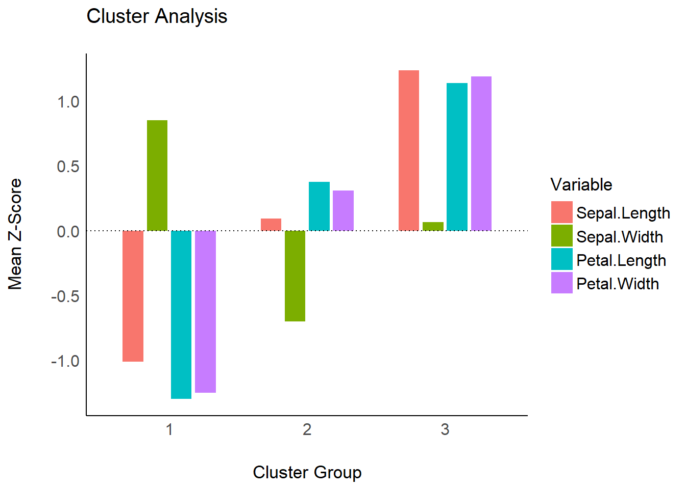
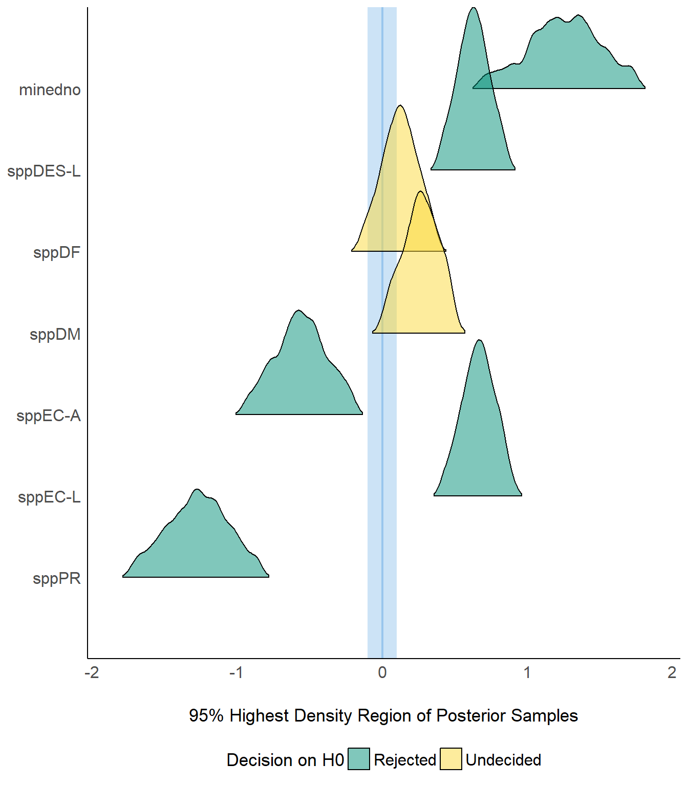
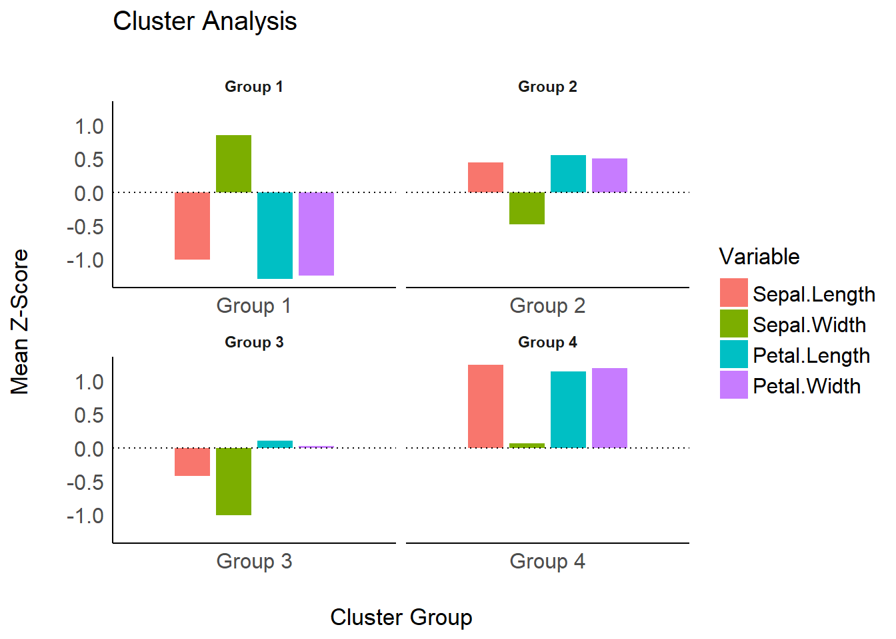
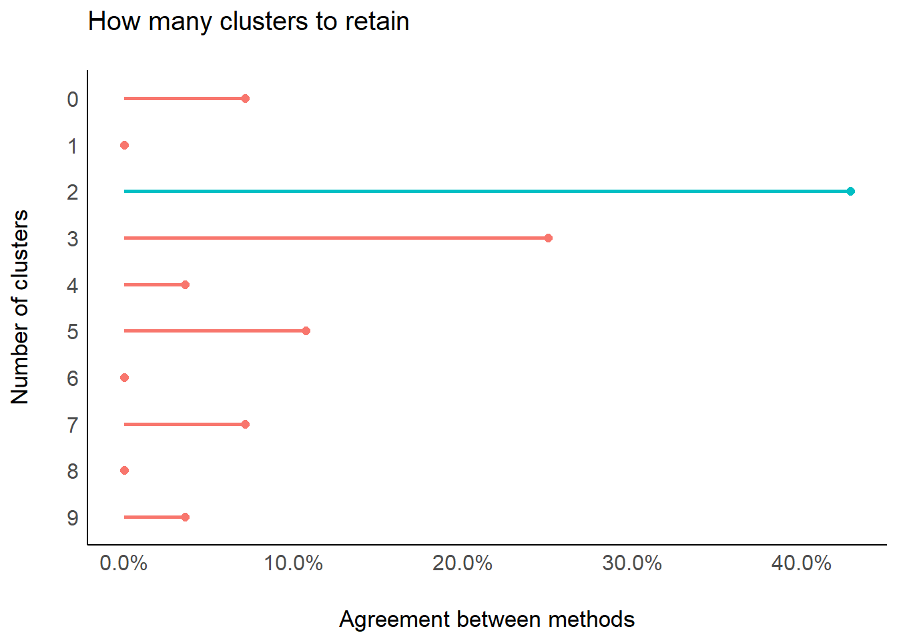
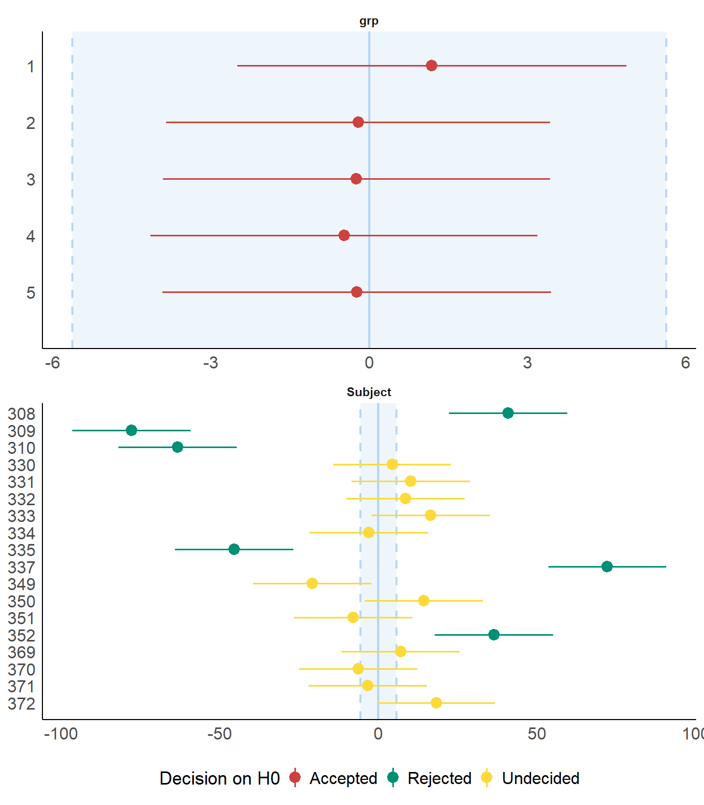

Plotting Functions for the parameters Package
parameters.RmdSetup and Model Fitting
library(parameters)
library(effectsize)
library(insight)
library(see)
library(glmmTMB)
library(lavaan)
library(metafor)
library(ggplot2)
library(splines)
data("Salamanders")
data("iris")
theme_set(theme_modern())# fit two example model
model <- glmmTMB(
count ~ spp + mined + (1 | site),
ziformula = ~ mined,
family = poisson(),
data = Salamanders
)
model_parameters(model)
#> # Fixed Effects component
#>
#> Parameter | Coefficient | SE | 95% CI | z | df | p
#> ------------------------------------------------------------------------
#> (Intercept) | -0.36 | 0.28 | [-0.90, 0.18] | -1.30 | 633 | 0.194
#> spp [PR] | -1.27 | 0.24 | [-1.74, -0.80] | -5.27 | 633 | < .001
#> spp [DM] | 0.27 | 0.14 | [ 0.00, 0.54] | 1.95 | 633 | 0.051
#> spp [EC-A] | -0.57 | 0.21 | [-0.97, -0.16] | -2.75 | 633 | 0.006
#> spp [EC-L] | 0.67 | 0.13 | [ 0.41, 0.92] | 5.20 | 633 | < .001
#> spp [DES-L] | 0.63 | 0.13 | [ 0.38, 0.87] | 4.96 | 633 | < .001
#> spp [DF] | 0.12 | 0.15 | [-0.17, 0.40] | 0.78 | 633 | 0.435
#> mined [no] | 1.27 | 0.27 | [ 0.74, 1.80] | 4.72 | 633 | < .001
#>
#> # Zero-Inflated component
#>
#> Parameter | Coefficient | SE | 95% CI | z | df | p
#> ------------------------------------------------------------------------
#> (Intercept) | 0.79 | 0.27 | [ 0.26, 1.32] | 2.90 | 633 | 0.004
#> mined [no] | -1.84 | 0.31 | [-2.46, -1.23] | -5.87 | 633 | < .001
model2 <- lm(Sepal.Length ~ Species * bs(Petal.Width, degree = 2), data = iris)
model_parameters(model2)
#> Parameter | Coefficient | SE | 95% CI | t | df | p
#> --------------------------------------------------------------------------------------------------------------
#> (Intercept) | 4.79 | 0.17 | [ 4.45, 5.13] | 27.66 | 141 | < .001
#> Species [versicolor] | -3.73 | 2.14 | [ -7.96, 0.50] | -1.74 | 141 | 0.083
#> Species [virginica] | -2.67 | 2.88 | [ -8.36, 3.03] | -0.93 | 141 | 0.356
#> Petal.Width [1st degree] | 2.53 | 2.36 | [ -2.13, 7.20] | 1.07 | 141 | 0.285
#> Petal.Width [2nd degree] | -11.18 | 21.14 | [-52.98, 30.62] | -0.53 | 141 | 0.598
#> Species [versicolor] * Petal.Width [1st degree] | 5.48 | 4.84 | [ -4.09, 15.05] | 1.13 | 141 | 0.260
#> Species [virginica] * Petal.Width [1st degree] | 2.37 | 4.35 | [ -6.22, 10.96] | 0.54 | 141 | 0.587
#> Species [versicolor] * Petal.Width [2nd degree] | 14.84 | 21.16 | [-26.99, 56.68] | 0.70 | 141 | 0.484
#> Species [virginica] * Petal.Width [2nd degree] | 15.81 | 21.32 | [-26.35, 57.96] | 0.74 | 141 | 0.460Model Parameters
(related function documentation)
The plot()-method for model_parameters() creates a so called “forest plot”. In case of models with multiple components, parameters are separated into facets by model component.
result <- model_parameters(model)
plot(result)
As compared to the classical summary()-output, model_parameters(), and hence the plot()-method, tries to create human readable, prettier parameters names.
result <- model_parameters(model2)
plot(result)
Simulated Model Parameters
simulate_parameters() computes simulated draws of parameters and their related indices such as Confidence Intervals (CI) and p-values. Simulating parameter draws can be seen as a (computationally faster) alternative to bootstrapping.
As simulate_parameters() is based on simulate_model() and thus simulates many draws for each parameter, plot() will produce similar plots as the density estimation plots from Bayesian models.
result <- simulate_parameters(model)
plot(result)
plot(result, stack = FALSE)
plot(result, n_columns = 2)
plot(result, n_columns = 2, stack = FALSE)
Model Parameters of SEM models
structure <- ' visual =~ x1 + x2 + x3
textual =~ x4 + x5 + x6
speed =~ x7 + x8 + x9 '
model <- lavaan::cfa(structure, data = HolzingerSwineford1939)
result <- parameters::model_parameters(model)
plot(result)
Model Parameters of Bayesian models
model_parameters() for Bayesian models will produce “forest plots” (instead of density estimations).
# We download the model to save computation time. Here is the code
# to refit the exact model used below...
# zinb <- read.csv("http://stats.idre.ucla.edu/stat/data/fish.csv")
# set.seed(123)
# model <- brm(bf(
# count ~ persons + child + camper + (1 | persons),
# zi ~ child + camper + (1 | persons)
# ),
# data = zinb,
# family = zero_inflated_poisson()
# )
brms_model <- insight::download_model("brms_zi_2")
result <- model_parameters(brms_model, effects = "all", component = "all")
plot(result)
plot(result, n_column = 1)
Model Parameters of Meta-Analysis models
mydat <- data.frame(
effectsize = c(-0.393, 0.675, 0.282, -1.398),
standarderror = c(0.317, 0.317, 0.13, 0.36)
)
ma <- rma(yi = effectsize, sei = standarderror, method = "REML", data = mydat)
result <- model_parameters(ma)
result
#> Parameter | Coefficient | SE | 95% CI | z | p | Weight
#> -------------------------------------------------------------------------
#> Study 1 | -0.39 | 0.32 | [-1.01, 0.23] | -1.24 | 0.215 | 9.95
#> Study 2 | 0.68 | 0.32 | [ 0.05, 1.30] | 2.13 | 0.033 | 9.95
#> Study 3 | 0.28 | 0.13 | [ 0.03, 0.54] | 2.17 | 0.030 | 59.17
#> Study 4 | -1.40 | 0.36 | [-2.10, -0.69] | -3.88 | < .001 | 7.72
#> Overall | -0.18 | 0.44 | [-1.05, 0.68] | -0.42 | 0.676 |
plot(result)
Model Parameters of Meta-Analysis Models with Subgroups
set.seed(123)
data(dat.bcg)
dat <- escalc(
measure = "RR",
ai = tpos,
bi = tneg,
ci = cpos,
di = cneg,
data = dat.bcg
)
dat$disease <- sample(c("Cancer", "CVD", "Depression"), size = nrow(dat), replace = TRUE)
model <- rma(yi, vi, mods = ~ disease, data = dat, digits = 3, slab = author)
result <- model_parameters(model)
result
#> # Depression
#>
#> Parameter | Coefficient | SE | 95% CI | z | p | Weight
#> ------------------------------------------------------------------------------------
#> Aronson | -0.89 | 0.57 | [-2.01, 0.23] | -1.56 | 0.119 | 3.07
#> Ferguson & Simes | -1.59 | 0.44 | [-2.45, -0.72] | -3.59 | < .001 | 5.14
#> Rosenthal et al.1 | -1.35 | 0.64 | [-2.61, -0.08] | -2.09 | 0.036 | 2.41
#> Frimodt-Moller et al | -0.22 | 0.23 | [-0.66, 0.23] | -0.96 | 0.336 | 19.53
#> Coetzee & Berjak | -0.47 | 0.24 | [-0.94, 0.00] | -1.98 | 0.048 | 17.72
#> Overall | -0.12 | 0.59 | [-1.28, 1.04] | -0.20 | 0.841 |
#>
#> # CVD
#>
#> Parameter | Coefficient | SE | 95% CI | z | p | Weight
#> -----------------------------------------------------------------------------------
#> Hart & Sutherland | -1.44 | 0.14 | [-1.72, -1.16] | -10.19 | < .001 | 49.97
#> Stein & Aronson | -0.79 | 0.08 | [-0.95, -0.62] | -9.46 | < .001 | 144.81
#> Vandiviere et al | -1.62 | 0.47 | [-2.55, -0.70] | -3.43 | < .001 | 4.48
#> TPT Madras | 0.01 | 0.06 | [-0.11, 0.14] | 0.19 | 0.849 | 252.42
#> Comstock et al.1 | -0.34 | 0.11 | [-0.56, -0.12] | -3.05 | 0.002 | 80.57
#> Comstock & Webster | 0.45 | 0.73 | [-0.98, 1.88] | 0.61 | 0.541 | 1.88
#> Overall | 0.03 | 0.56 | [-1.08, 1.13] | 0.05 | 0.963 |
#>
#> # Cancer
#>
#> Parameter | Coefficient | SE | 95% CI | z | p | Weight
#> ---------------------------------------------------------------------------------
#> Rosenthal et al.2 | -1.37 | 0.27 | [-1.90, -0.84] | -5.07 | < .001 | 13.69
#> Comstock et al.2 | -0.02 | 0.27 | [-0.54, 0.51] | -0.06 | 0.948 | 14.00
#> Overall | -0.69 | 0.49 | [-1.65, 0.26] | -1.42 | 0.155 |
plot(result)
Principal Component Analysis
(related function documentation)
data(mtcars)
result <- principal_components(mtcars[, 1:7], n = "all", threshold = 0.2)
result
#> # Loadings from Principal Component Analysis (no rotation)
#>
#> Variable | PC1 | PC2 | PC3 | PC4 | PC5 | PC6 | Complexity
#> -------------------------------------------------------------------
#> mpg | -0.93 | | | -0.30 | | | 1.30
#> cyl | 0.96 | | | | | -0.21 | 1.18
#> disp | 0.95 | | | -0.23 | | | 1.16
#> hp | 0.87 | 0.36 | | | 0.30 | | 1.64
#> drat | -0.75 | 0.48 | 0.44 | | | | 2.47
#> wt | 0.88 | -0.35 | 0.26 | | | | 1.54
#> qsec | -0.54 | -0.81 | | | | | 1.96
#>
#> The 6 principal components accounted for 99.30% of the total variance of the original data (PC1 = 72.66%, PC2 = 16.52%, PC3 = 4.93%, PC4 = 2.26%, PC5 = 1.85%, PC6 = 1.08%).
plot(result)
result <- principal_components(
mtcars[, 1:7],
n = 3,
rotation = "varimax",
threshold = "max",
sort = TRUE
)
result
#> # Rotated loadings from Principal Component Analysis (varimax-rotation)
#>
#> Variable | RC1 | RC2 | RC3 | Complexity | Uniqueness | MSA
#> -----------------------------------------------------------------
#> wt | 0.91 | | | 1.31 | 0.03 | 0.77
#> mpg | -0.82 | | | 1.70 | 0.11 | 0.87
#> disp | 0.79 | | | 1.95 | 0.08 | 0.85
#> cyl | 0.64 | | | 2.84 | 0.06 | 0.87
#> qsec | | -0.98 | | 1.02 | 0.03 | 0.61
#> hp | | 0.69 | | 2.09 | 0.09 | 0.90
#> drat | | | -0.90 | 1.43 | 0.01 | 0.85
#>
#> The 3 principal components (varimax rotation) accounted for 94.11% of the total variance of the original data (RC1 = 45.02%, RC2 = 27.79%, RC3 = 21.30%).
plot(result, type = "line", text_color = "white") +
theme_abyss()
Cluster Analysis
(related function documentation)
data(iris)
result <- cluster_analysis(iris[, 1:4], n_clusters = 3)
result
#> # Cluster Analysis (mean z-score by cluster)
#>
#> Term Group 1 Group 2 Group 3
#> Sepal.Length -1.01 0.09 1.24
#> Sepal.Width 0.85 -0.70 0.07
#> Petal.Length -1.30 0.38 1.14
#> Petal.Width -1.25 0.31 1.19
#>
#> # Accuracy of Cluster Group Classification
#>
#> Group Accuracy
#> 1 100.00%
#> 2 95.31%
#> 3 97.22%
#>
#> Overall accuracy of classification: 97.33%
plot(result)
result <- cluster_analysis(iris[, 1:4], n_clusters = 4)
plot(result, n_columns = 2)
Number of Components/Factors to Retain
(related function documentation)
data(mtcars)
result <- n_factors(mtcars, type = "PCA")
result
#> # Method Agreement Procedure:
#>
#> The choice of 3 dimensions is supported by 5 (29.41%) methods out of 17 (Bartlett, CNG, SE Scree, R2, Velicer's MAP).
plot(result)
plot(result, type = "line")
Number of Clusters to Retain
(related function documentation)
data(iris)
result <- n_clusters(standardize(iris[, 1:4]))
result
#> # Method Agreement Procedure:
#>
#> The choice of 2 clusters is supported by 12 (42.86%) methods out of 28 (CH, Cindex, DB, Silhouette, Beale, Ratkowsky, PtBiserial, McClain, Dunn, SDindex, Mixture, Tibs2001SEmax).
plot(result)
plot(result, type = "line")